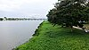

river-bank
phenomenon

Source: Wikipedia
Wikipedia Page (Something wrong with this association? Let us know.)
Wikidata Page (Something wrong with this association? Let us know.)
Occurs in:
- channel_bed_below-river-bank__depth
- drainage-basin_outlet_river-bank~left__latitude
- drainage-basin_outlet_river-bank~left__longitude
- drainage-basin_outlet_river-bank~right__latitude
- drainage-basin_outlet_river-bank~right__longitude
- river-bank_sediment~saturated_water__hydraulic_conductivity
- river-bank_water_flowing__volume-per-length_rate
- river-bank_water_flowing__volume-per-length_rate